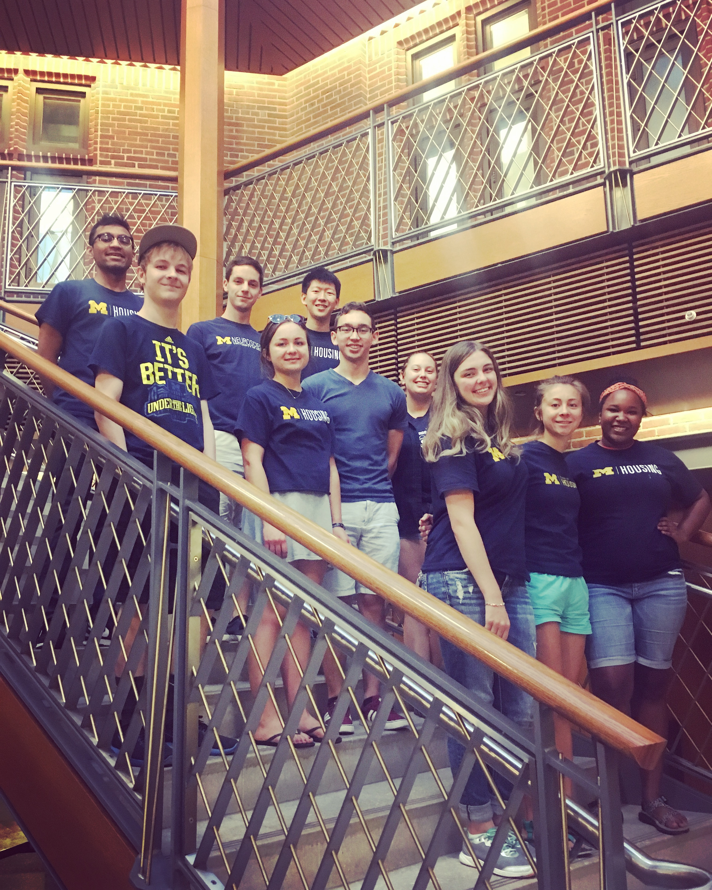
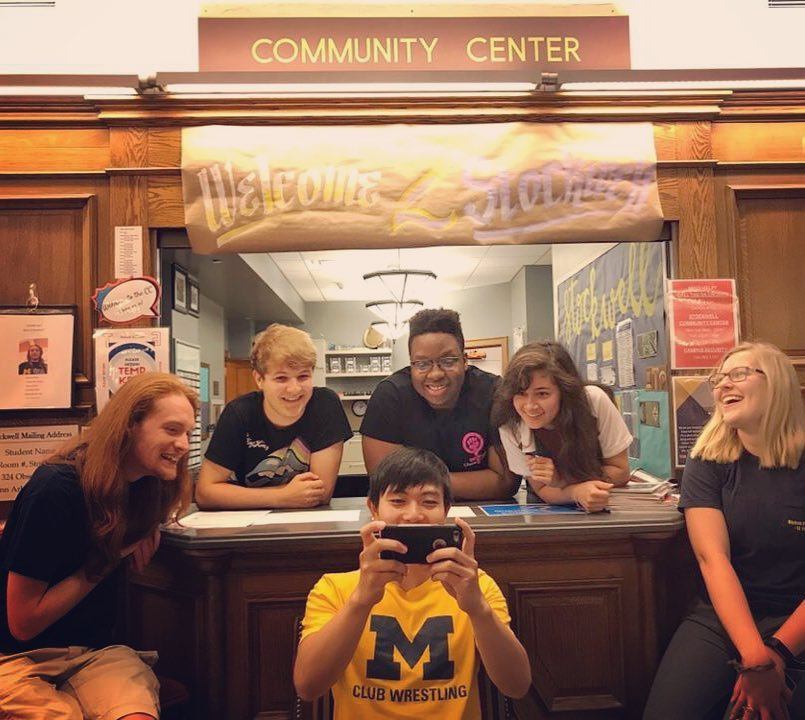

Started: January of 2019
Description:
I'm a member of the teaching team for a course that serves as continued programming education for informatics students; this is typically their secondary programming course and focuses on assorted skills and applications of Python while introducing SQL.
Topic Include: Databasing (SQL, SQLite3), Web Scraping+Crawling, API's requiring keys and/or OAuth, continued exposure to Git for version control, and review of unit testing and the principles of object-oriented programming (focusing on subclassing)
Responsibilities:
Ultimately, I help students understand new concepts and troubleshoot their code.
This mainly occurs in the weekly lectures (~140 students), in a lab section mentored by a Graduate-Student Instructor, and online via Piazza. I also provide grading.
Started: January of 2019
Description:
I'm a member of the instruction team for an introductory course required for students pursuing admission to the BSI program; the course provides a very broad overview of the history, issues, and opportunities for professionals interested in the information/technology sector.
Responsibilities:
IA's for this course attend weekly staff meetings, mentor check-ins, and provide grading and student-feedback.
Started: September of 2017
Description:
After working in Residential Staff as a Community Center Assistant for the summer, I decided to interview for the chance to become a Residential Advisor the upcoming fall. I placed in Stockwell Hall for Junior year, decided to remain for the summer concurrent to my research internship, and ended up staying for Senior year as well.
Responsibilities:
An RA is never truly "off the clock." A large portion of the job is building community within the hall, as well as the building as a whole. Getting to know residents quickly and as well as possible is critical, but we also place an emphasis on ensuring a safe and respectful environment. We have weekly staff meetings, biweekly check-ins with our Hall Director, regular front-desk work shifts, and regular monthly on-call shifts.
 From June 2018 to January 2019
Description:
I spent last (post-junior-year) summer as a research intern for UMSI Professor Lionel Robert as part of a meta-study project intended to organize and analyze pre-existing research publications focusing on human-robot interaction. The project largely focused on academic works measuring how factors in humans, groups, and robotic systems moderate various elements of humans' experiential perceptions of the interactions.
Responsibilities:
Reading massive sets of scholarly publications and reporting characteristics of the studies performed, such as evaluations of experimental methodology, reporting which types of statistical analyses are performed, and determining variables of interest.
From January 2018 to June 2018
Description:
I took a winter-semester internship concurrent to my studies junior year. I worked in a team under UMSI Professor Douglas Van Houweling (link to staff page) as part of a project sponsored by the National Science Foundation to promote the examination and preservation of early-internet history, specifically focusing on network development and commercialization of the internet between 1980 and 1996.
Responsibilities:
Attended weekly meetings, watching interviews, resolving errors from automated transcription, presenting written summations of key factors from each interview, including an outline of vital content and tags indicating individuals and organizations discussed.
From April 2017 to August 2017
Description:
Summer after my sophomore year, I decided to take a Residential Staff position working in the front-offices of the Northwood Apartments This is a lame description but I'll think of something more exotic later
Responsibilities:
Managed building access, mostly by using a database to track thousands (tens-of-thousands?) of keys to university-owned appartments; Issued parking passes; Liaison with local maintenance contractors; managed mailing system for the apartment complex.
From June 2017 to January 2018
Description:
This was a pretty standard retail job at a university-owned convenience store. I discovered that I unironically, truly enjoyed working in retail.
Responsibilities:
Most of my time was spent running the register.
I also got experience taking inventory, stocking shelves, accounting for my cash-register, training others, and learning to manage pop-up problems on-the-spot.
(paid) From September 2015 to September 2017
Description:
Throughout my time at the University of Michigan, I've always shared my gift for written communication with others. I help other students with their essays, applications, cover letters, and resumes. While I still do this, I only consider it an employment state in my first two years of attendance, as I ceased charging students for this type of help when I had better job opportunities junior year.
Responsibilities:
Error correction; Stylistic Feedback; Optimization under Word-Count Constraints; Organizational / Structural Criticism
From May 2011 to August 2015
Description:
Prior to my university attendance, I worked in landscaping and cleanup for a business co-owned by my uncle and father.
Responsibilities:
Most of my work was on reshaping the landscapes and cleaning up as jobs reached their conclusion.
Admittedly, I also spent a lot of time having to conversationally distract patrons with a penchant for getting way too close to dangerous heavy machinery.